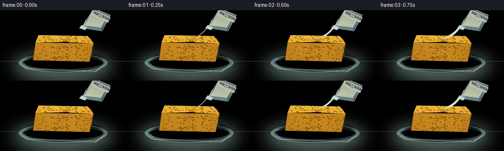
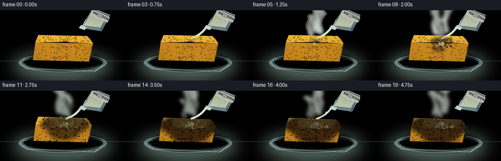
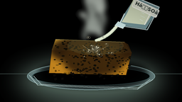
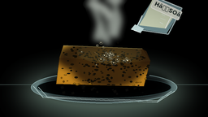

CODING AGENTS AS PIXEL WORLD MODELS
traex/GPT-5.6-Sol · phygen_155
点击播放 · 原生 RGB 像素
逐轮保存的候选
回放视频、检查图与代码变化。
每份候选均可单独播放。实际图片检查记录在下方工具轨迹中。
候选 01播放与检查图
点击播放 · 原生 RGB 像素


展开代码变化
--- 上一保存版本
+++ 本次保存版本
@@ -0,0 +1,311 @@
+from pathlib import Path
+import math
+import numpy as np
+from PIL import Image, ImageDraw, ImageFilter, ImageFont
+import artifact_io
+
+# Deterministic, hand-built timelapse of sulfuric acid dehydrating/charring a sponge.
+W, H, N = 256, 144, 20
+S = 4
+WW, HH = W*S, H*S
+rng = np.random.default_rng(155)
+
+try:
+ FONT_SM = ImageFont.truetype('/usr/share/fonts/truetype/dejavu/DejaVuSans.ttf', 5*S)
+ FONT_CHEM = ImageFont.truetype('/usr/share/fonts/truetype/dejavu/DejaVuSans-Bold.ttf', 7*S)
+except OSError:
+ FONT_SM = FONT_CHEM = ImageFont.load_default()
+
+def sc_pts(points):
+ return [(int(x*S), int(y*S)) for x,y in points]
+
+def ellipse(draw, box, **kw):
+ draw.ellipse(tuple(int(v*S) for v in box), **kw)
+
+def line(draw, pts, width=1, **kw):
+ draw.line(sc_pts(pts), width=max(1,int(width*S)), **kw)
+
+def smooth(a,b,x):
+ q = np.clip((x-a)/(b-a),0,1)
+ return q*q*(3-2*q)
+
+def make_bg(i):
+ y,x = np.mgrid[0:HH,0:WW]
+ # Cool laboratory backdrop, warm task light centered over the reaction.
+ yy = y/HH
+ radial = np.exp(-(((x/WW-.50)/.48)**2 + ((y/HH-.30)/.55)**2)*2.0)
+ base = np.zeros((HH,WW,3), dtype=np.float32)
+ base[...,0] = 15 + 22*radial + 22*np.maximum(yy-.62,0)
+ base[...,1] = 28 + 29*radial + 16*np.maximum(yy-.62,0)
+ base[...,2] = 31 + 28*radial + 12*np.maximum(yy-.62,0)
+ # Subtle fixed photographic grain.
+ rr = np.random.default_rng(900)
+ noise = rr.normal(0,1.6,(HH,WW,1))
+ base += noise
+ return Image.fromarray(np.uint8(np.clip(base,0,255)), 'RGB').convert('RGBA')
+
+# Fixed sponge cellular pattern in normalized front/top coordinates.
+front_pores=[]
+for _ in range(120):
+ u,v = rng.uniform(0.02,.98), rng.uniform(.05,.96)
+ rx,ry = rng.uniform(.75,2.2),rng.uniform(.45,1.25)
+ front_pores.append((u,v,rx,ry,rng.uniform(0,1)))
+top_pores=[]
+for _ in range(90):
+ u,v = rng.uniform(.03,.97),rng.uniform(.04,.96)
+ rx,ry = rng.uniform(.65,1.8),rng.uniform(.35,.9)
+ top_pores.append((u,v,rx,ry,rng.uniform(0,1)))
+edge_notches=[(float(rng.uniform(.03,.97)), float(rng.uniform(.5,1.8))) for _ in range(25)]
+
+# Stable bubble sites around the impact and runoff.
+bubble_sites=[]
+for k in range(42):
+ ang=rng.uniform(0,2*math.pi); rad=rng.uniform(3,39)*(rng.uniform()**.55)
+ bubble_sites.append((134+math.cos(ang)*rad, 70+math.sin(ang)*rad*.45, rng.uniform(1,3.6), rng.uniform(0,1), k))
+
+# Stable char flecks spreading out from the wet center.
+flecks=[]
+for k in range(105):
+ ang=rng.uniform(0,2*math.pi); rad=rng.uniform(2,54)*(rng.uniform()**.55)
+ flecks.append((134+math.cos(ang)*rad, 68+math.sin(ang)*rad*.36, rng.uniform(.3,1.6),rng.uniform(0,1)))
+
+def smoke_layer(t, reaction):
+ lay=Image.new('RGBA',(WW,HH),(0,0,0,0)); d=ImageDraw.Draw(lay)
+ if reaction<=.05: return lay
+ # Several rising, curling translucent vapor columns; stronger and grayer late.
+ for j in range(9):
+ phase=j*.77
+ born=(j*.113)%1.0
+ age=(t*1.65-born)%1.0
+ strength=np.clip((reaction-.05)*2.0,0,1)*(1-age)**.35
+ x0=132+(j-4)*3.1
+ y0=58-j%3
+ pts=[]
+ for m in range(15):
+ h=m*(2.2+age*1.5)
+ x=x0 + math.sin(m*.48+phase+t*5.0)*(1.4+m*.20) + (j-4)*age*.35
+ y=y0-h-age*13
+ pts.append((x,y))
+ col=(210,219,210,int((19+25*reaction)*strength)) if reaction<.6 else (150,158,150,int((22+31*reaction)*strength))
+ line(d,pts,width=1.8+age*4.5,fill=col)
+ # diffuse plume head
+ if strength>.08:
+ px,py=pts[-1]; r=(3+age*9)
+ ellipse(d,(px-r,py-r*.55,px+r,py+r*.55),fill=(185,193,184,int(14*strength)))
+ return lay.filter(ImageFilter.GaussianBlur(3.4*S))
+
+def draw_beaker_and_stream(im, t, reaction):
+ # Beaker enters already tilted at the top-right. It is deliberately cropped for macro framing.
+ glass=Image.new('RGBA',(WW,HH),(0,0,0,0)); d=ImageDraw.Draw(glass)
+ # soft back shadow/refraction
+ d.polygon(sc_pts([(191,-5),(224,11),(205,41),(166,35),(175,19)]), fill=(114,146,150,20))
+ # acid body within tipped beaker
+ d.polygon(sc_pts([(188,-2),(219,12),(204,35),(171,31),(178,20)]), fill=(211,220,190,52))
+ # glass body and highlights
+ line(d,[(188,-5),(224,10),(207,42),(167,36),(175,19)],1.35,fill=(221,238,238,145))
+ line(d,[(224,10),(207,42),(167,36)],.65,fill=(95,126,129,115))
+ line(d,[(191,0),(215,11),(203,35)],1.1,fill=(255,255,255,98))
+ # open pouring lip
+ d.polygon(sc_pts([(166,30),(177,35),(173,40),(161,36)]),fill=(204,229,228,48),outline=(213,235,235,155))
+ line(d,[(162,36),(173,40)],1.15,fill=(244,255,252,188))
+ # tiny white graduations, visually identifying laboratory glassware
+ for y0,ln in [(12,6),(17,4),(22,6),(27,4)]:
+ line(d,[(203-y0*.24,y0),(203-y0*.24+ln,y0+2.6)],.55,fill=(233,245,241,105))
+ # Label on upper body, aligned loosely with tilt.
+ label=Image.new('RGBA',(40*S,14*S),(0,0,0,0)); ld=ImageDraw.Draw(label)
+ ld.rounded_rectangle((0,0,38*S,12*S),radius=2*S,fill=(230,232,218,145),outline=(255,255,248,150),width=1*S)
+ ld.text((3*S,1*S),'HâSOâ',font=FONT_CHEM,fill=(41,51,48,220))
+ label=label.rotate(-25,resample=Image.Resampling.BICUBIC,expand=True)
+ glass.alpha_composite(label,(184*S,-2*S))
+ # Viscous pour arches from lip to sponge; shimmering width changes slightly.
+ if t>.035:
+ onset=smooth(.035,.14,t)
+ end=1-smooth(.79,.96,t)
+ amt=onset*end
+ pts=[]
+ for q in np.linspace(0,1,25):
+ x=164*(1-q)+134*q + 2.4*math.sin(math.pi*q)
+ y=37*(1-q)+58*q + 7.5*q*(1-q)
+ pts.append((x,y))
+ # transparent halo and bright core
+ line(d,pts,width=4.2*amt+.5,fill=(203,220,194,int(70*amt)))
+ line(d,pts,width=2.35*amt+.25,fill=(229,237,207,int(186*amt)))
+ line(d,[(x-0.55,y) for x,y in pts],width=.55,fill=(255,255,244,int(210*amt)))
+ # occasional necking/drop when pour stops
+ if t>.80:
+ q=(t-.80)/.20
+ yy=40+q*22
+ ellipse(d,(158-q*17-1,yy-2,158-q*17+1,yy+2),fill=(225,235,210,int(160*(1-q))))
+ im.alpha_composite(glass)
+
+def sponge_geometry(reaction):
+ # Heat makes the foam slump and cave in around the impact while lower corners stay anchored.
+ slump=smooth(.30,.98,reaction)
+ left=67+2*slump; right=190-5*slump; bottom=105+1*slump
+ # top ridge develops a deep central crater
+ top_left=(78,51+5*slump)
+ top_right=(178-3*slump,53+7*slump)
+ front_l=(72+1*slump,66+5*slump)
+ front_r=(190-5*slump,68+7*slump)
+ return left,right,bottom,top_left,top_right,front_l,front_r,slump
+
+def draw_sponge(im,t,reaction):
+ left,right,bottom,tl,tr,fl,fr,slump=sponge_geometry(reaction)
+ d=ImageDraw.Draw(im)
+ # Soft contact shadow
+ sh=Image.new('RGBA',(WW,HH),(0,0,0,0)); sd=ImageDraw.Draw(sh)
+ ellipse(sd,(59,91,203,119),fill=(0,0,0,130))
+ sh=sh.filter(ImageFilter.GaussianBlur(5*S)); im.alpha_composite(sh)
+
+ # Sponge front and top surfaces, including caved-in top silhouette.
+ front=[fl,fr,(right-8,bottom),(left,bottom-3)]
+ top=[tl,tr,fr,(151,66+11*slump),(133,64+16*slump),(111,65+8*slump),fl]
+ side=[tr,(184-4*slump,58+5*slump),fr]
+ d.polygon(sc_pts(front),fill=(202,137,31,255))
+ d.polygon(sc_pts(side),fill=(157,102,22,255))
+ d.polygon(sc_pts(top),fill=(242,183,55,255))
+ # warm rim and side shading
+ line(d,[tl,tr],1,fill=(255,224,119,210))
+ line(d,[fl,(left,bottom-3),(right-8,bottom),fr],.7,fill=(117,75,17,170))
+
+ # Masks for all visible sponge faces and reaction influence.
+ smask=Image.new('L',(WW,HH),0); md=ImageDraw.Draw(smask)
+ md.polygon(sc_pts(front),fill=255); md.polygon(sc_pts(side),fill=255); md.polygon(sc_pts(top),fill=255)
+ # Irregular expanding burn ellipses centered at impact.
+ char=Image.new('L',(WW,HH),0); cd=ImageDraw.Draw(char)
+ spread=smooth(.08,.92,reaction)
+ rx=5+61*spread; ry=3+29*spread
+ ellipse(cd,(134-rx,61-ry*.42,134+rx,61+ry),fill=230)
+ ellipse(cd,(128-rx*.60,74-ry*.45,128+rx*.72,74+ry*1.1),fill=210)
+ # asymmetric runnels down the front
+ if spread>.18:
+ for j in range(7):
+ xx=105+j*10 + math.sin(j*2.1)*2
+ reach=(spread-.18)*49*(.72+(j%3)*.13)
+ line(cd,[(xx,66),(xx+math.sin(j)*4,66+reach)],2.2+j%2,fill=200)
+ char=char.filter(ImageFilter.GaussianBlur((2.4+spread*1.6)*S))
+ char=Image.fromarray(np.minimum(np.array(char),np.array(smask)).astype(np.uint8),'L')
+ # Multi-tone wet brown to carbon-black overlay.
+ ch=np.array(char,dtype=np.float32)/255.
+ y,x=np.mgrid[0:HH,0:WW]
+ wet=np.zeros((HH,WW,4),dtype=np.uint8)
+ carbon=smooth(.26,.90,reaction)
+ wet[...,0]=np.uint8(86-58*carbon)
+ wet[...,1]=np.uint8(58-43*carbon)
+ wet[...,2]=np.uint8(20-13*carbon)
+ wet[...,3]=np.uint8(np.clip(ch*(205+45*carbon),0,255))
+ im.alpha_composite(Image.fromarray(wet,'RGBA'))
+
+ d=ImageDraw.Draw(im)
+ # Golden open-cell pores transition into black pits as the front overtakes them.
+ for u,v,rxp,ryp,z in front_pores:
+ x=fl[0]*(1-u)+fr[0]*u + (v*.15)*(left-right)*.02
+ yt=fl[1]*(1-u)+fr[1]*u
+ y=yt+(bottom-yt)*v
+ dist=((x-134)/(6+61*spread))**2+((y-70)/(4+31*spread))**2
+ burned=dist<1.0 and reaction>.10+z*.20
+ if burned:
+ col=(12+int(14*z),11+int(8*z),7,150+int(80*z))
+ else:
+ col=(104+int(26*z),67+int(22*z),12,125+int(65*z))
+ ellipse(d,(x-rxp,y-ryp,x+rxp,y+ryp),fill=col)
+ if not burned and rxp>1.3:
+ line(d,[(x-rxp*.5,y-ryp*.35),(x+rxp*.35,y-ryp*.2)],.25,fill=(255,210,87,100))
+ for u,v,rxp,ryp,z in top_pores:
+ # map unit square into approximate top parallelogram
+ lx=tl[0]*(1-v)+fl[0]*v; ly=tl[1]*(1-v)+fl[1]*v
+ rx0=tr[0]*(1-v)+fr[0]*v; ry0=tr[1]*(1-v)+fr[1]*v
+ x=lx*(1-u)+rx0*u; y=ly*(1-u)+ry0*u
+ # pull center pores downward with crater
+ crater=math.exp(-((x-134)/25)**2)*slump
+ y+=crater*8
+ dist=((x-134)/(5+62*spread))**2+((y-63)/(3+24*spread))**2
+ burned=dist<1 and reaction>.08+z*.18
+ col=(8+int(16*z),8+int(11*z),6,180) if burned else (145+int(32*z),92+int(30*z),15,145+int(55*z))
+ ellipse(d,(x-rxp,y-ryp,x+rxp,y+ryp),fill=col)
+
+ # Speckled edge of carbonization gives an organic, non-perfect reaction front.
+ for x,y,r,z in flecks:
+ reach=5+59*spread
+ dd=math.sqrt((x-134)**2+((y-64)*2.0)**2)
+ if dd < reach*(.80+.25*z) and reaction>.10+z*.18:
+ ellipse(d,(x-r,y-r*.6,x+r,y+r*.6),fill=(10,9,6,110+int(90*z)))
+
+ # glossy acid pool and boiling bubbles at the impact, clipped perceptually to the top/front.
+ if reaction>.05:
+ wetprog=smooth(.05,.28,reaction)*(1-smooth(.78,1.0,t)*.45)
+ pool=Image.new('RGBA',(WW,HH),(0,0,0,0)); pd=ImageDraw.Draw(pool)
+ ellipse(pd,(119-24*spread,56-5*spread,149+25*spread,67+11*spread),fill=(90,82,48,int(40+48*wetprog)))
+ line(pd,[(116,64),(132,67+8*slump),(153,64)],.8,fill=(239,232,181,int(80*wetprog)))
+ pool.putalpha(Image.fromarray(np.minimum(np.array(pool.getchannel('A')),np.array(smask)).astype(np.uint8)))
+ im.alpha_composite(pool)
+ d=ImageDraw.Draw(im)
+ for bx,by,br,phase,k in bubble_sites:
+ # moving flicker but fixed sites; sites activate as spreading front reaches them
+ dist=math.sqrt((bx-134)**2+((by-67)*1.9)**2)
+ active=dist < (8+57*spread) and reaction>.12+phase*.14
+ pulse=.5+.5*math.sin(k*3.3+t*39)
+ if active and pulse>.22:
+ rr=br*(.55+.60*pulse)
+ yy=by-slump*max(0,(71-by))*.2
+ col=(198,178,112,int(95+105*pulse)) if carbon<.55 else (104,100,80,int(90+100*pulse))
+ ellipse(d,(bx-rr,yy-rr*.65,bx+rr,yy+rr*.65),outline=col,width=max(1,int(.55*S)))
+ ellipse(d,(bx-rr*.35,yy-rr*.34,bx,yy),fill=(255,250,214,int(70+90*pulse)))
+
+ # Crumbling black char flakes around the base late in reaction.
+ if reaction>.56:
+ for k in range(22):
+ rrng=np.random.default_rng(500+k)
+ start=.53+rrng.random()*.30
+ if reaction>start:
+ age=(reaction-start)/(1-start)
+ x=75+rrng.random()*105+(rrng.random()-.5)*age*10
+ y=99+rrng.random()*8+age*(3+rrng.random()*7)
+ r=.5+rrng.random()*1.6
+ d.polygon(sc_pts([(x-r,y-r*.4),(x+r*.7,y-r),(x+r,y+r*.5),(x-r*.5,y+r)]),fill=(11,10,8,220))
+
+def draw_dish(im):
+ # Glass watch dish is drawn in two stages: behind/under sponge and front rim.
+ d=ImageDraw.Draw(im)
+ ellipse(d,(38,88,218,127),fill=(109,136,135,18),outline=(151,185,184,95),width=1*S)
+ ellipse(d,(45,94,211,121),fill=(9,15,15,18),outline=(76,110,111,72),width=1*S)
+ line(d,[(47,107),(58,119),(194,124),(211,112)],1.0,fill=(182,211,207,82))
+ line(d,[(57,119),(194,124)],.55,fill=(236,247,243,90))
+
+def render_frame(i):
+ t=i/(N-1)
+ # reaction lags the first contact, then accelerates in timelapse
+ reaction=smooth(.06,.92,t)
+ im=make_bg(i)
+ d=ImageDraw.Draw(im)
+ # out-of-focus lab verticals and bench horizon
+ d.rectangle((0,0,WW,HH),fill=(0,0,0,0))
+ line(d,[(0,104),(256,104)],.65,fill=(118,146,141,65))
+ # soft pool of light on bench
+ gl=Image.new('RGBA',(WW,HH),(0,0,0,0)); gd=ImageDraw.Draw(gl)
+ ellipse(gd,(24,89,231,140),fill=(113,139,126,34))
+ gl=gl.filter(ImageFilter.GaussianBlur(16*S)); im.alpha_composite(gl)
+ draw_dish(im)
+ draw_sponge(im,t,reaction)
+ # Vapor sits behind the crisp acid stream, but in front of sponge.
+ im.alpha_composite(smoke_layer(t,reaction))
+ draw_beaker_and_stream(im,t,reaction)
+ # Front glass rim gleam over the subject.
+ d=ImageDraw.Draw(im)
+ line(d,[(41,106),(53,120),(193,126),(215,112)],.75,fill=(202,228,224,108))
+ # subtle vignette and warm impact glow
+ arr=np.array(im.convert('RGB')).astype(np.float32)
+ yy,xx=np.mgrid[0:HH,0:WW]
+ nx=(xx-WW/2)/(WW/2); ny=(yy-HH/2)/(HH/2)
+ vig=np.clip(1-.20*(nx*nx+ny*ny),.68,1)[...,None]
+ arr*=vig
+ # final downsample produces antialiasing and cohesive grain
+ out=Image.fromarray(np.uint8(np.clip(arr,0,255)),'RGB').resize((W,H),Image.Resampling.LANCZOS)
+ return np.asarray(out,dtype=np.uint8)
+
+def main():
+ frames=np.stack([render_frame(i) for i in range(N)],axis=0)
+ artifact_io.save(frames,Path(__file__).resolve().parent)
+
+if __name__=='__main__':
+ main()
可观测工具轨迹
实际执行的命令与返回图片。
命令 1exit 0
/bin/bash -lc "ls -la && printf '\\n--- prompt.txt ---\\n' && cat prompt.txt && printf '\\n--- GENERATION_RULES.md ---\\n' && cat GENERATION_RULES.md && printf '\\n--- task_spec.json ---\\n' && cat task_spec.json"
命令 2exit 0
/bin/bash -lc "find . -maxdepth 2 -type f -printf '%p\\n' | sort"
命令 3exit 0
/bin/bash -lc "sed -n '1,240p' artifact_io.py"
命令 4exit 0
/bin/bash -lc "cat > generate.py <<'PY'
from pathlib import Path
import math
import numpy as np
from PIL import Image, ImageDraw, ImageFilter, ImageFont
import artifact_io
# Deterministic, hand-built timelapse of sulfuric acid dehydrating/charring a sponge.
W, H, N = 256, 144, 20
S = 4
WW, HH = W*S, H*S
rng = np.random.default_rng(155)
try:
FONT_SM = ImageFont.truetype('/usr/share/fonts/truetype/dejavu/DejaVuSans.ttf', 5*S)
FONT_CHEM = ImageFont.truetype('/usr/share/fonts/truetype/dejavu/DejaVuSans-Bold.ttf', 7*S)
except OSError:
FONT_SM = FONT_CHEM = ImageFont.load_default()
def sc_pts(points):
return [(int(x*S), int(y*S)) for x,y in points]
def ellipse(draw, box, **kw):
draw.ellipse(tuple(int(v*S) for v in box), **kw)
def line(draw, pts, width=1, **kw):
draw.line(sc_pts(pts), width=max(1,int(width*S)), **kw)
def smooth(a,b,x):
q = np.clip((x-a)/(b-a),0,1)
return q*q*(3-2*q)
def make_bg(i):
y,x = np.mgrid[0:HH,0:WW]
# Cool laboratory backdrop, warm task light centered over the reaction.
yy = y/HH
radial = np.exp(-(((x/WW-.50)/.48)**2 + ((y/HH-.30)/.55)**2)*2.0)
base = np.zeros((HH,WW,3), dtype=np.float32)
base[...,0] = 15 + 22*radial + 22*np.maximum(yy-.62,0)
base[...,1] = 28 + 29*radial + 16*np.maximum(yy-.62,0)
base[...,2] = 31 + 28*radial + 12*np.maximum(yy-.62,0)
# Subtle fixed photographic grain.
rr = np.random.default_rng(900)
noise = rr.normal(0,1.6,(HH,WW,1))
base += noise
return Image.fromarray(np.uint8(np.clip(base,0,255)), 'RGB').convert('RGBA')
# Fixed sponge cellular pattern in normalized front/top coordinates.
front_pores=[]
for _ in range(120):
u,v = rng.uniform(0.02,.98), rng.uniform(.05,.96)
rx,ry = rng.uniform(.75,2.2),rng.uniform(.45,1.25)
front_pores.append((u,v,rx,ry,rng.uniform(0,1)))
top_pores=[]
for _ in range(90):
u,v = rng.uniform(.03,.97),rng.uniform(.04,.96)
rx,ry = rng.uniform(.65,1.8),rng.uniform(.35,.9)
top_pores.append((u,v,rx,ry,rng.uniform(0,1)))
edge_notches=[(float(rng.uniform(.03,.97)), float(rng.uniform(.5,1.8))) for _ in range(25)]
# Stable bubble sites around the impact and runoff.
bubble_sites=[]
for k in range(42):
ang=rng.uniform(0,2*math.pi); rad=rng.uniform(3,39)*(rng.uniform()**.55)
bubble_sites.append((134+math.cos(ang)*rad, 70+math.sin(ang)*rad*.45, rng.uniform(1,3.6), rng.uniform(0,1), k))
# Stable char flecks spreading out from the wet center.
flecks=[]
for k in range(105):
ang=rng.uniform(0,2*math.pi); rad=rng.uniform(2,54)*(rng.uniform()**.55)
flecks.append((134+math.cos(ang)*rad, 68+math.sin(ang)*rad*.36, rng.uniform(.3,1.6),rng.uniform(0,1)))
def smoke_layer(t, reaction):
lay=Image.new('RGBA',(WW,HH),(0,0,0,0)); d=ImageDraw.Draw(lay)
if reaction<=.05: return lay
# Several rising, curling translucent vapor columns; stronger and grayer late.
for j in range(9):
phase=j*.77
born=(j*.113)%1.0
age=(t*1.65-born)%1.0
strength=np.clip((reaction-.05)*2.0,0,1)*(1-age)**.35
x0=132+(j-4)*3.1
y0=58-j%3
pts=[]
for m in range(15):
h=m*(2.2+age*1.5)
x=x0 + math.sin(m*.48+phase+t*5.0)*(1.4+m*.20) + (j-4)*age*.35
y=y0-h-age*13
pts.append((x,y))
col=(210,219,210,int((19+25*reaction)*strength)) if reaction<.6 else (150,158,150,int((22+31*reaction)*strength))
line(d,pts,width=1.8+age*4.5,fill=col)
# diffuse plume head
if strength>.08:
px,py=pts[-1]; r=(3+age*9)
ellipse(d,(px-r,py-r*.55,px+r,py+r*.55),fill=(185,193,184,int(14*strength)))
return lay.filter(ImageFilter.GaussianBlur(3.4*S))
def draw_beaker_and_stream(im, t, reaction):
# Beaker enters already tilted at the top-right. It is deliberately cropped for macro framing.
glass=Image.new('RGBA',(WW,HH),(0,0,0,0)); d=ImageDraw.Draw(glass)
# soft back shadow/refraction
d.polygon(sc_pts([(191,-5),(224,11),(205,41),(166,35),(175,19)]), fill=(114,146,150,20))
# acid body within tipped beaker
d.polygon(sc_pts([(188,-2),(219,12),(204,35),(171,31),(178,20)]), fill=(211,220,190,52))
# glass body and highlights
line(d,[(188,-5),(224,10),(207,42),(167,36),(175,19)],1.35,fill=(221,238,238,145))
line(d,[(224,10),(207,42),(167,36)],.65,fill=(95,126,129,115))
line(d,[(191,0),(215,11),(203,35)],1.1,fill=(255,255,255,98))
# open pouring lip
d.polygon(sc_pts([(166,30),(177,35),(173,40),(161,36)]),fill=(204,229,228,48),outline=(213,235,235,155))
line(d,[(162,36),(173,40)],1.15,fill=(244,255,252,188))
# tiny white graduations, visually identifying laboratory glassware
for y0,ln in [(12,6),(17,4),(22,6),(27,4)]:
line(d,[(203-y0*.24,y0),(203-y0*.24+ln,y0+2.6)],.55,fill=(233,245,241,105))
# Label on upper body, aligned loosely with tilt.
label=Image.new('RGBA',(40*S,14*S),(0,0,0,0)); ld=ImageDraw.Draw(label)
ld.rounded_rectangle((0,0,38*S,12*S),radius=2*S,fill=(230,232,218,145),outline=(255,255,248,150),width=1*S)
ld.text((3*S,1*S),'HâSOâ',font=FONT_CHEM,fill=(41,51,48,220))
label=label.rotate(-25,resample=Image.Resampling.BICUBIC,expand=True)
glass.alpha_composite(label,(184*S,-2*S))
# Viscous pour arches from lip to sponge; shimmering width changes slightly.
if t>.035:
onset=smooth(.035,.14,t)
end=1-smooth(.79,.96,t)
amt=onset*end
pts=[]
for q in np.linspace(0,1,25):
x=164*(1-q)+134*q + 2.4*math.sin(math.pi*q)
y=37*(1-q)+58*q + 7.5*q*(1-q)
pts.append((x,y))
# transparent halo and bright core
line(d,pts,width=4.2*amt+.5,fill=(203,220,194,int(70*amt)))
line(d,pts,width=2.35*amt+.25,fill=(229,237,207,int(186*amt)))
line(d,[(x-0.55,y) for x,y in pts],width=.55,fill=(255,255,244,int(210*amt)))
# occasional necking/drop when pour stops
if t>.80:
q=(t-.80)/.20
yy=40+q*22
ellipse(d,(158-q*17-1,yy-2,158-q*17+1,yy+2),fill=(225,235,210,int(160*(1-q))))
im.alpha_composite(glass)
def sponge_geometry(reaction):
# Heat makes the foam slump and cave in around the impact while lower corners stay anchored.
slump=smooth(.30,.98,reaction)
left=67+2*slump; right=190-5*slump; bottom=105+1*slump
# top ridge develops a deep central crater
top_left=(78,51+5*slump)
top_right=(178-3*slump,53+7*slump)
front_l=(72+1*slump,66+5*slump)
front_r=(190-5*slump,68+7*slump)
return left,right,bottom,top_left,top_right,front_l,front_r,slump
def draw_sponge(im,t,reaction):
left,right,bottom,tl,tr,fl,fr,slump=sponge_geometry(reaction)
d=ImageDraw.Draw(im)
# Soft contact shadow
sh=Image.new('RGBA',(WW,HH),(0,0,0,0)); sd=ImageDraw.Draw(sh)
ellipse(sd,(59,91,203,119),fill=(0,0,0,130))
sh=sh.filter(ImageFilter.GaussianBlur(5*S)); im.alpha_composite(sh)
# Sponge front and top surfaces, including caved-in top silhouette.
front=[fl,fr,(right-8,bottom),(left,bottom-3)]
top=[tl,tr,fr,(151,66+11*slump),(133,64+16*slump),(111,65+8*slump),fl]
side=[tr,(184-4*slump,58+5*slump),fr]
d.polygon(sc_pts(front),fill=(202,137,31,255))
d.polygon(sc_pts(side),fill=(157,102,22,255))
d.polygon(sc_pts(top),fill=(242,183,55,255))
# warm rim and side shading
line(d,[tl,tr],1,fill=(255,224,119,210))
line(d,[fl,(left,bottom-3),(right-8,bottom),fr],.7,fill=(117,75,17,170))
# Masks for all visible sponge faces and reaction influence.
smask=Image.new('L',(WW,HH),0); md=ImageDraw.Draw(smask)
md.polygon(sc_pts(front),fill=255); md.polygon(sc_pts(side),fill=255); md.polygon(sc_pts(top),fill=255)
# Irregular expanding burn ellipses centered at impact.
char=Image.new('L',(WW,HH),0); cd=ImageDraw.Draw(char)
spread=smooth(.08,.92,reaction)
rx=5+61*spread; ry=3+29*spread
ellipse(cd,(134-rx,61-ry*.42,134+rx,61+ry),fill=230)
ellipse(cd,(128-rx*.60,74-ry*.45,128+rx*.72,74+ry*1.1),fill=210)
# asymmetric runnels down the front
if spread>.18:
for j in range(7):
xx=105+j*10 + math.sin(j*2.1)*2
reach=(spread-.18)*49*(.72+(j%3)*.13)
line(cd,[(xx,66),(xx+math.sin(j)*4,66+reach)],2.2+j%2,fill=200)
char=char.filter(ImageFilter.GaussianBlur((2.4+spread*1.6)*S))
char=Image.fromarray(np.minimum(np.array(char),np.array(smask)).astype(np.uint8),'L')
# Multi-tone wet brown to carbon-black overlay.
ch=np.array(char,dtype=np.float32)/255.
y,x=np.mgrid[0:HH,0:WW]
wet=np.zeros((HH,WW,4),dtype=np.uint8)
carbon=smooth(.26,.90,reaction)
wet[...,0]=np.uint8(86-58*carbon)
wet[...,1]=np.uint8(58-43*carbon)
wet[...,2]=np.uint8(20-13*carbon)
wet[...,3]=np.uint8(np.clip(ch*(205+45*carbon),0,255))
im.alpha_composite(Image.fromarray(wet,'RGBA'))
d=ImageDraw.Draw(im)
# Golden open-cell pores transition into black pits as the front overtakes them.
for u,v,rxp,ryp,z in front_pores:
x=fl[0]*(1-u)+fr[0]*u + (v*.15)*(left-right)*.02
yt=fl[1]*(1-u)+fr[1]*u
y=yt+(bottom-yt)*v
dist=((x-134)/(6+61*spread))**2+((y-70)/(4+31*spread))**2
burned=dist<1.0 and reaction>.10+z*.20
if burned:
col=(12+int(14*z),11+int(8*z),7,150+int(80*z))
else:
col=(104+int(26*z),67+int(22*z),12,125+int(65*z))
ellipse(d,(x-rxp,y-ryp,x+rxp,y+ryp),fill=col)
if not burned and rxp>1.3:
line(d,[(x-rxp*.5,y-ryp*.35),(x+rxp*.35,y-ryp*.2)],.25,fill=(255,210,87,100))
for u,v,rxp,ryp,z in top_pores:
# map unit square into approximate top parallelogram
lx=tl[0]*(1-v)+fl[0]*v; ly=tl[1]*(1-v)+fl[1]*v
rx0=tr[0]*(1-v)+fr[0]*v; ry0=tr[1]*(1-v)+fr[1]*v
x=lx*(1-u)+rx0*u; y=ly*(1-u)+ry0*u
# pull center pores downward with crater
crater=math.exp(-((x-134)/25)**2)*slump
y+=crater*8
dist=((x-134)/(5+62*spread))**2+((y-63)/(3+24*spread))**2
burned=dist<1 and reaction>.08+z*.18
col=(8+int(16*z),8+int(11*z),6,180) if burned else (145+int(32*z),92+int(30*z),15,145+int(55*z))
ellipse(d,(x-rxp,y-ryp,x+rxp,y+ryp),fill=col)
# Speckled edge of carbonization gives an organic, non-perfect reaction front.
for x,y,r,z in flecks:
reach=5+59*spread
dd=math.sqrt((x-134)**2+((y-64)*2.0)**2)
if dd < reach*(.80+.25*z) and reaction>.10+z*.18:
ellipse(d,(x-r,y-r*.6,x+r,y+r*.6),fill=(10,9,6,110+int(90*z)))
# glossy acid pool and boiling bubbles at the impact, clipped perceptually to the top/front.
if reaction>.05:
wetprog=smooth(.05,.28,reaction)*(1-smooth(.78,1.0,t)*.45)
pool=Image.new('RGBA',(WW,HH),(0,0,0,0)); pd=ImageDraw.Draw(pool)
ellipse(pd,(119-24*spread,56-5*spread,149+25*spread,67+11*spread),fill=(90,82,48,int(40+48*wetprog)))
line(pd,[(116,64),(132,67+8*slump),(153,64)],.8,fill=(239,232,181,int(80*wetprog)))
pool.putalpha(Image.fromarray(np.minimum(np.array(pool.getchannel('A')),np.array(smask)).astype(np.uint8)))
im.alpha_composite(pool)
d=ImageDraw.Draw(im)
for bx,by,br,phase,k in bubble_sites:
# moving flicker but fixed sites; sites activate as spreading front reaches them
dist=math.sqrt((bx-134)**2+((by-67)*1.9)**2)
active=dist < (8+57*spread) and reaction>.12+phase*.14
pulse=.5+.5*math.sin(k*3.3+t*39)
if active and pulse>.22:
rr=br*(.55+.60*pulse)
yy=by-slump*max(0,(71-by))*.2
col=(198,178,112,int(95+105*pulse)) if carbon<.55 else (104,100,80,int(90+100*pulse))
ellipse(d,(bx-rr,yy-rr*.65,bx+rr,yy+rr*.65),outline=col,width=max(1,int(.55*S)))
ellipse(d,(bx-rr*.35,yy-rr*.34,bx,yy),fill=(255,250,214,int(70+90*pulse)))
# Crumbling black char flakes around the base late in reaction.
if reaction>.56:
for k in range(22):
rrng=np.random.default_rng(500+k)
start=.53+rrng.random()*.30
if reaction>start:
age=(reaction-start)/(1-start)
x=75+rrng.random()*105+(rrng.random()-.5)*age*10
y=99+rrng.random()*8+age*(3+rrng.random()*7)
r=.5+rrng.random()*1.6
d.polygon(sc_pts([(x-r,y-r*.4),(x+r*.7,y-r),(x+r,y+r*.5),(x-r*.5,y+r)]),fill=(11,10,8,220))
def draw_dish(im):
# Glass watch dish is drawn in two stages: behind/under sponge and front rim.
d=ImageDraw.Draw(im)
ellipse(d,(38,88,218,127),fill=(109,136,135,18),outline=(151,185,184,95),width=1*S)
ellipse(d,(45,94,211,121),fill=(9,15,15,18),outline=(76,110,111,72),width=1*S)
line(d,[(47,107),(58,119),(194,124),(211,112)],1.0,fill=(182,211,207,82))
line(d,[(57,119),(194,124)],.55,fill=(236,247,243,90))
def render_frame(i):
t=i/(N-1)
# reaction lags the first contact, then accelerates in timelapse
reaction=smooth(.06,.92,t)
im=make_bg(i)
d=ImageDraw.Draw(im)
# out-of-focus lab verticals and bench horizon
d.rectangle((0,0,WW,HH),fill=(0,0,0,0))
line(d,[(0,104),(256,104)],.65,fill=(118,146,141,65))
# soft pool of light on bench
gl=Image.new('RGBA',(WW,HH),(0,0,0,0)); gd=ImageDraw.Draw(gl)
ellipse(gd,(24,89,231,140),fill=(113,139,126,34))
gl=gl.filter(ImageFilter.GaussianBlur(16*S)); im.alpha_composite(gl)
draw_dish(im)
draw_sponge(im,t,reaction)
# Vapor sits behind the crisp acid stream, but in front of sponge.
im.alpha_composite(smoke_layer(t,reaction))
draw_beaker_and_stream(im,t,reaction)
# Front glass rim gleam over the subject.
d=ImageDraw.Draw(im)
line(d,[(41,106),(53,120),(193,126),(215,112)],.75,fill=(202,228,224,108))
# subtle vignette and warm impact glow
arr=np.array(im.convert('RGB')).astype(np.float32)
yy,xx=np.mgrid[0:HH,0:WW]
nx=(xx-WW/2)/(WW/2); ny=(yy-HH/2)/(HH/2)
vig=np.clip(1-.20*(nx*nx+ny*ny),.68,1)[...,None]
arr*=vig
# final downsample produces antialiasing and cohesive grain
out=Image.fromarray(np.uint8(np.clip(arr,0,255)),'RGB').resize((W,H),Image.Resampling.LANCZOS)
return np.asarray(out,dtype=np.uint8)
def main():
frames=np.stack([render_frame(i) for i in range(N)],axis=0)
artifact_io.save(frames,Path(__file__).resolve().parent)
if __name__=='__main__':
main()
PY
python generate.py
ls -lh pixels.npz inspection.png transition_check.png index.html frames/00.png frames/19.png"命令 5exit 0
/bin/bash -lc "python - <<'PY'
import numpy as np
from PIL import Image
ims=[np.array(Image.open(f'frames/{i:02d}.png')) for i in range(20)]
print('shape',np.stack(ims).shape,'dtype',ims[0].dtype)
print('consecutive mean abs deltas:', [round(float(np.abs(ims[i].astype(int)-ims[i-1].astype(int)).mean()),2) for i in range(1,20)])
print('first-final MAD',np.abs(ims[-1].astype(int)-ims[0].astype(int)).mean())
PY"视觉工具实际返回图片 1

视觉工具实际返回图片 2

视觉工具实际返回图片 3

视觉工具实际返回图片 4

保存候选 1 份；完成命令 5 次；可验证图片返回 4 张。原始 API 响应与完整日志保留在本地。